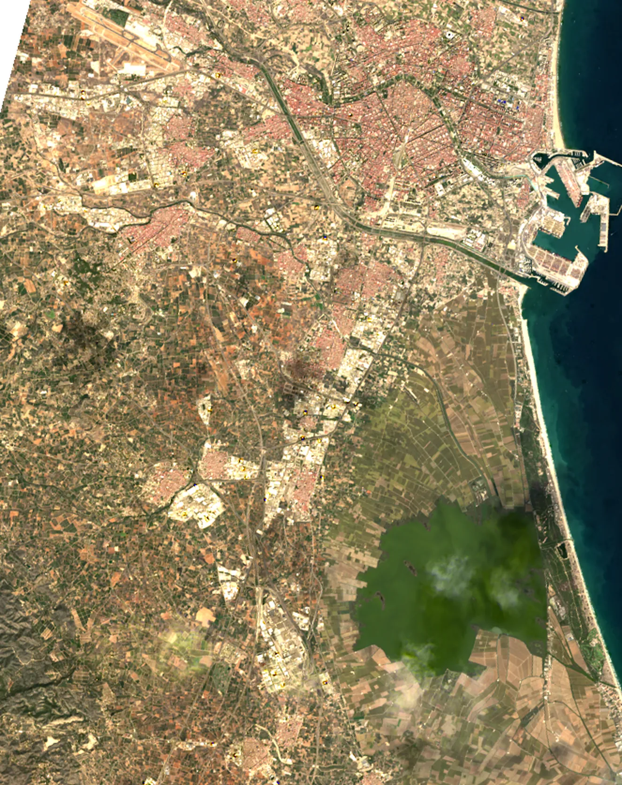
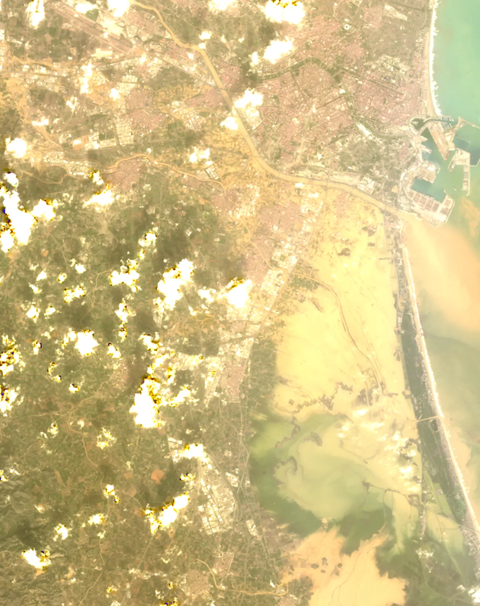
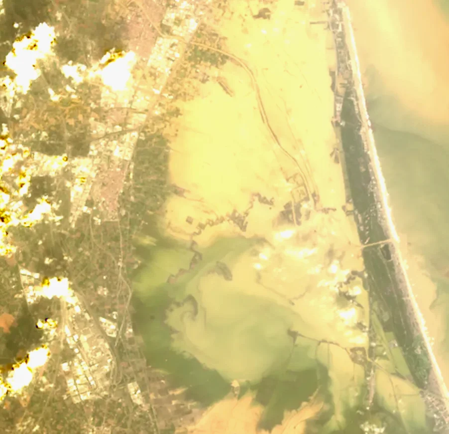
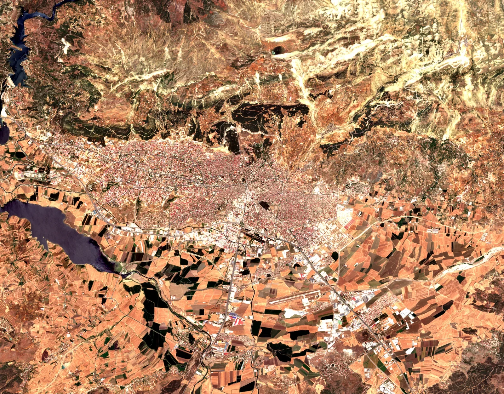
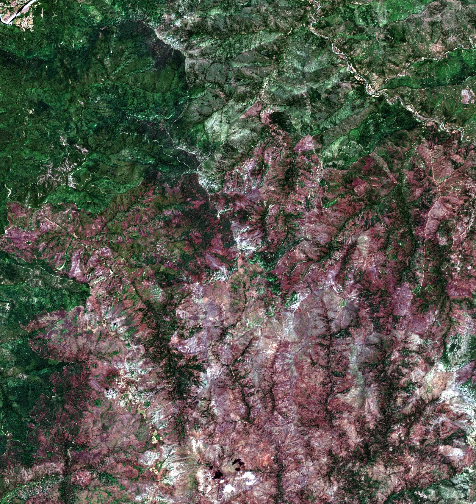
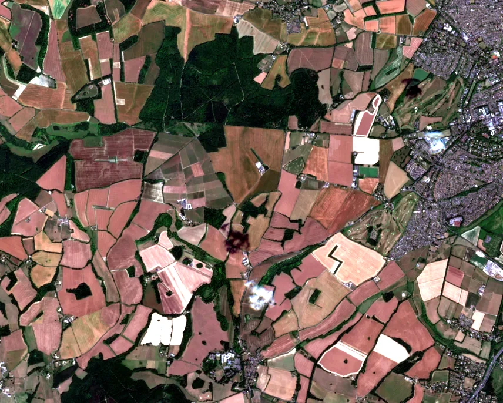
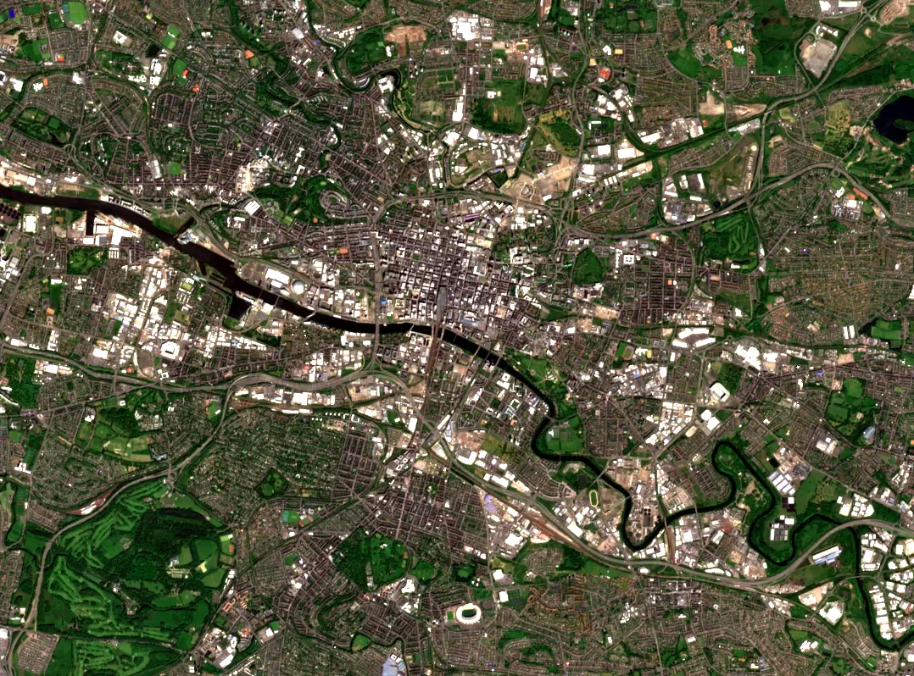
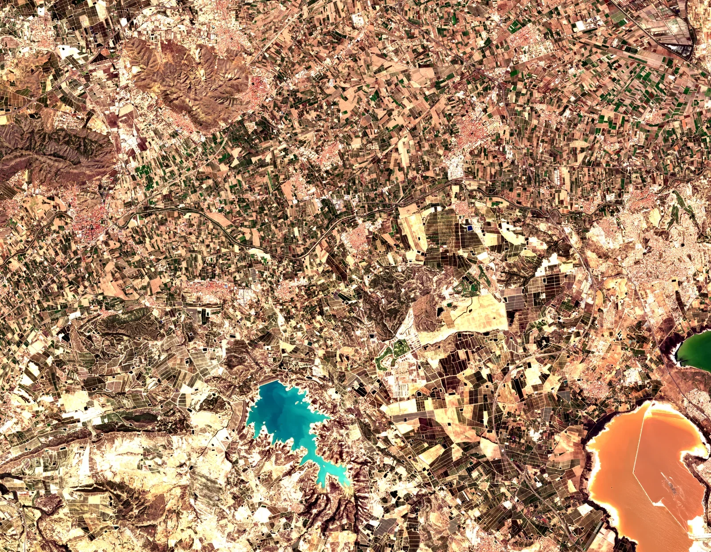
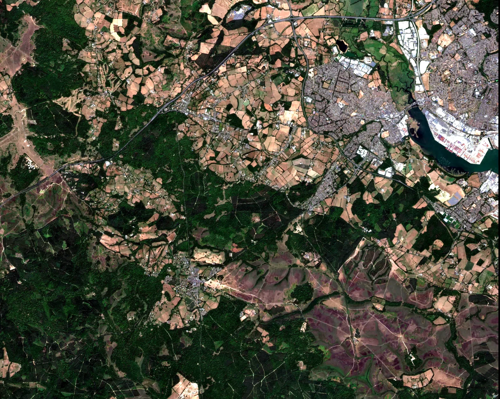
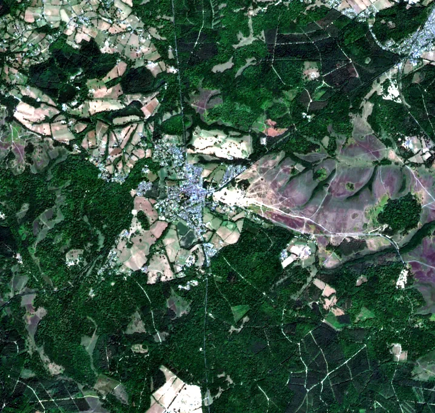

Remote sensing & GIS analysis
Satellite data turned into answers you can act on
I map floods, measure ground movement, estimate forest carbon and find urban hot spots from radar, LiDAR and optical imagery. Every result comes with maps, ready-to-use data and a short plain-language report.


28 Sep 30 OctValencia, October 2024. Landsat 8 true colour: the day after the flood, brown water covers the fields around the Albufera lagoon. Drag across the image to compare.
Work
Eight research projects, all with open code
Each project has public code, tests and results. Open any image for the full case study.

Flood mapping, Valencia, 2024
Valencia DANA flood
67 km² of standing water the day after; radar tracks it draining to 14 km² a week later.

InSAR, Türkiye and Morocco, 2023
Earthquake ground deformation
About 74 cm of line-of-sight change across 10 km of the Kahramanmaraş rupture.

Forest carbon, California, 2020
Wildfire carbon loss
6.8 million tonnes of carbon; 10% of the area burned hot and caused 58% of the loss.

Vegetation health
Which index tracks chlorophyll
The red-edge MTCI explains about 75% of chlorophyll variation; NDVI about 20%.

Urban heat, Glasgow, 2019
Where greening cools Glasgow
25.5 km² of hot, bare built-up land flagged first for street trees and green roofs.

Water resources, Spain
Water stress across Spain
19 of 50 provinces, home to two-thirds of the population, are under high stress.

Site screening, Hampshire, UK
Quiet sites with good access
213 km² of quiet land within 5 km of a motorway, matching the original ArcGIS output.

LiDAR, New Forest, UK. Synthetic demo
LiDAR forest inventory workflow
Canopy height, stand metrics and a ranked list of compartments for field checks.
Lab
Three working tools built on real project data. Each one shows a judgement call inside an analysis, and how much that call changes the answer.
Valencia radar, 1 November 2024
How much does one threshold change a flood map?
Water looks dark to radar. A pixel counts as flooded (blue) when it's darker than the threshold and has darkened enough since before the flood. Move the sliders and watch the area and building count change.
How I handle it: pick the threshold from the data itself (Otsu's method), then report how the result moves when it changes, rather than a single number.
Morocco earthquake, September 2023, Sentinel-1
From radar fringes to measured ground movement
The satellite records repeating colour fringes, each one 2.8 cm of movement. Unwrapping turns them into a continuous displacement map. Press and drag across the map to draw a line; its displacement profile appears below.
Dashed stretches of the profile cross the dark grey areas, where the two radar images differ too much (coherence below 0.3) for a reliable measurement. They are left unmeasured rather than filled in. The light band shows the overall trend. The square marks the USGS epicentre.
Glasgow, Landsat 8, 28 June 2019
Where should greening go first, and what will it buy?
Cyan marks the hottest built-up land with little vegetation. Choose how much of it to target and how much greener it gets, and see the area and the expected surface cooling.
Cooling uses the city-wide relationship between NDVI and surface temperature (about 8.7 °C per unit NDVI). It's a screening estimate: surface temperature isn't air temperature, and it isn't a forecast for any one site.
What I can do for you
Focused analysis projects: one clear question, one area, delivered in weeks. I work with open satellite data and open-source tools, so you can rerun and update the results yourself later.
Flood & disaster mapping
Flood extent from Sentinel-1 radar and Landsat/Sentinel-2, affected buildings and roads, and how fast the water recedes. Radar sees through cloud, so maps are possible even when the sky stays overcast after a storm.
GeoTIFF, GeoPackage, map sheets, report
Ground deformation (InSAR)
Centimetre-scale ground movement from Sentinel-1 interferometry for earthquakes, subsidence and infrastructure corridors, with profiles, statistics and a clear account of uncertainty.
ESA SNAP, SNAPHU, Python
Forest, carbon & vegetation
Canopy height from LiDAR, burn severity and above-ground carbon loss with sensitivity analysis, and which vegetation indices really track chlorophyll and crop vigour.
Sentinel-2, airborne LiDAR, field data
Urban heat & climate adaptation
Land-surface temperature from Landsat thermal data, the hottest neighbourhoods with the least greenery, and how much cooling extra vegetation could bring.
Landsat 8/9 TIRS, NDVI, land cover
GIS analysis & automation
Site screening, water-stress analysis, and moving ArcGIS/arcpy workflows to open-source Python with the same results and no licence fees.
GeoPandas, rasterio, QGIS, ArcGIS Pro
How a project runs
Every project follows these five steps. How long it takes depends on the area and the data.
- 1
Frame the question
What decision the work supports, the area and dates, and what accuracy is good enough.
- 2
Source the data
Free satellite archives first, checked for cloud, coverage and licence terms.
- 3
Analyse
Documented, reproducible code you can rerun at any time.
- 4
Check
Uncertainty ranges and cross-checks against reference data or a second sensor.
- 5
Deliver
Maps, GIS layers and a short report stating the findings, the limits and next steps.
About
I'm Xiaoqiao (Evelyn) Liu, a remote sensing and GIS analyst with an MSc in Applied GIS and Remote Sensing from the University of Southampton and a BSc in Remote Sensing Science and Technology from China University of Geosciences (Wuhan).
At the Hainan Aerospace Technology Innovation Center I processed two decades of multi-sensor satellite data (Sentinel-1, Envisat, ALOS PALSAR, MODIS, VIIRS) on internal waves and eddies in the South China Sea, and built a batch Sentinel-1 processing chain in SNAP and MATLAB.
I work to three rules: results you can reproduce, every number with its uncertainty, and a plain statement of what the result must not be used for.
Data
- Sentinel-1 SAR / InSAR
- Sentinel-2, Landsat 8/9
- Airborne LiDAR, hyperspectral
Tools
- Python (rasterio, GeoPandas, NumPy)
- ESA SNAP, SNAPHU, ENVI
- ArcGIS Pro, QGIS, MATLAB, R
Languages
- English (professional)
- Mandarin Chinese (native)
Have a question satellite data could answer?
Send me the area, the dates and the decision you need to make. I'll reply with whether it's feasible and an outline approach.